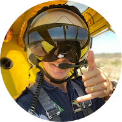

|  | Justin van AsArial Fire Fire Fighting Pilot @ Kishugu Aviation based in Nelspruit, South Africa. I am currently a Bomber Pilot on the Air Tractor 802A designed as a Fire Supression System. |
The Air Tractor AT-802 is built for battling fires large and small—not only as an initial attack firefighter, but also for extended duties supporting ground crews. It combines agility, performance, high reliability, and pinpoint accuracy with a versatility that allows it to operate where other firefighting aircraft can’t.